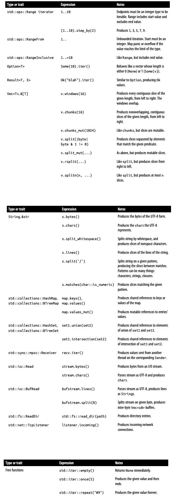

迭代器是产生一系列值的值，通常用于循环操作。Rust 的标准库提供了遍历vector、字符串、哈希表和其他集合的迭代器，还提供了从输入流生成文本行、网络连接、用于多线程之间值传递的迭代器，Rust 的迭代器灵活、富有表现力且高效。
在 Rust 中，std::iter::Iteratorstd::iter::IntoIterator
1 2 3 4 5 pub trait Iterator { type Item ; fn next (&mut self ) -> Option <Self ::Item>; ... }
迭代器可以是任何实现了 Iterator 的值，Item 是每次迭代产生的值，next 要么返回 Some(v)，v 是下一个值，要么返回 None 表示迭代结束。
想要被迭代的类型也可以实现 std::iter::IntoIteratorinto_iter 返回一个迭代器：
1 2 3 4 5 pub trait IntoIterator { type Item ; type IntoIter : Iterator ; fn into_iter (self ) -> Self ::IntoIter; }
我们常用的 for 循环仅仅是先调用 into_iter 生成一个迭代器，然后重复调用迭代器的 next 方法，直到 next 返回 None，预示着迭代结束。
Rust 标准库文档详细解释了每种类型提供的迭代器类型，但该库遵循一些通用约定来帮助定位并找到需要的东西。
iter 和 iter_mut大多数集合类型都提供了 iter 和 iter_mut 方法，它们返回类型的迭代器，生成对每个item的共享或可变引用。像 &[T] 和 &mut [T] 这样的数组切片也有 iter 和 iter_mut 方法。这些方法是获取迭代器的最常用方法，如果不打算让 for 循环为您处理它，可以这样做：
1 2 3 4 5 6 7 8 let v = vec! [4 , 20 , 12 , 8 , 6 ];let mut iterator = v.iter ();assert_eq! (iterator.next (), Some (&4 ));assert_eq! (iterator.next (), Some (&20 ));assert_eq! (iterator.next (), Some (&12 ));assert_eq! (iterator.next (), Some (&8 ));assert_eq! (iterator.next (), Some (&6 ));assert_eq! (iterator.next (), None );
这个迭代器的 item 类型是 &i32：每次调用 next 都会产生对下一个元素的引用，直到我们到达vector的末尾。每种类型都可以自由地以最适合其目的的方式实现 iter 和 iter_mut。std::path::Path 上的 iter 方法返回一个迭代器，该迭代器一次生成一个路径信息：
1 2 3 4 5 6 7 use std::ffi::OsStr;use std::path::Path;let path = Path::new ("C:/Users/JimB/Downloads/Fedora.iso" );let mut iterator = path.iter ();assert_eq! (iterator.next (), Some (OsStr::new ("C:" )));assert_eq! (iterator.next (), Some (OsStr::new ("Users" )));assert_eq! (iterator.next (), Some (OsStr::new ("JimB" )));
into_iter 实现当一个类型实现 IntoIterator 时，你可以自己调用它的 into_iter 方法，就像 for 循环一样：
1 2 3 4 5 6 7 8 use std::collections::BTreeSet;let mut favorites = BTreeSet::new ();favorites.insert ("Lucy in the Sky With Diamonds" .to_string ()); favorites.insert ("Liebesträume No. 3" .to_string ()); let mut it = favorites.into_iter ();assert_eq! (it.next (), Some ("Liebesträume No. 3" .to_string ()));assert_eq! (it.next (), Some ("Lucy in the Sky With Diamonds" .to_string ()));assert_eq! (it.next (), None );
大多数集合提供了几种 IntoIterator 的实现，例如，&T，&mut T 和 T：
&T 类型的迭代器产生的每个值都是对值的共享引用；
&mut T 类型的迭代器产生的每个值都对值的可变引用。例如 Vec<String>，调用 (&mut vector).into_iter() 返回了一个迭代器，它的 Item 类型是 &mut String；
调用 T 类型的 into_iter() 方法首先会获取集合值的是所有权，在迭代过程中，每个 item 的所有权从集合移动至消费的人；
for 循环将 IntoIterator::into_iter 应用于其操作数，因此这三个实现创建了以下习惯用法，用于迭代对集合的共享或可变引用，或使用集合并获取其元素的所有权：
1 2 3 for element in &collection { ... }for element in &mut collection { ... }for element in collection { ... }
并非每种类型都提供所有三种实现。例如，HashSet、BTreeSet 和 BinaryHeap 不会在可变引用上实现 IntoIterator，因为修改它们的元素可能会违反类型的不变性。
切片实现了三个 IntoIterator 变体中的两个，因为它们不拥有自己的元素，所以不存在[T]这种情况。相反，&[T] 和 &mut [T] 的 into_iter 返回一个迭代器，该迭代器生成对元素的共享和可变引用。
from_fn 和 successors一个更简单通用的方式是提供一个返回它们的闭包。std::iter::from_fnOption<T> 的函数生成一个迭代器：
1 2 3 4 5 6 7 8 fn main () { use rand::random; use std::iter::from_fn; let lengths : Vec <f64 > = from_fn (|| Some ((random::<f64 >() - random::<f64 >()).abs ())) .take (1000 ) .collect (); }
由于这个迭代器永远返回 Some(f64)，所以它永远不会结束，但是我们通过 take(1000) 只取了前 1000 个值。
如果产生的每个值都和前一个相关，那么可以使用 std::iter::successorsitem：
1 2 3 4 5 6 7 8 9 10 11 use num::Complex;use std::iter::successors;fn escape_time (c: Complex<f64 >, limit: usize ) -> Option <usize > { let zero = Complex { re: 0.0 , im: 0.0 }; successors (Some (zero), |&z| Some (z * z + c)) .take (limit) .enumerate () .find (|(_i, z)| z.norm_sqr () > 4.0 ) .map (|(i, _z)| i) }
从零开始，successors 通过重复对最后一个点求平方并与参数 c求和。
from_fn 和 successors 都接受 FnMut 闭包，因此闭包可以捕获和修改来自周围范围的变量。例如，这个斐波那契函数使用move闭包来捕获变量并将其用作其运行状态：
1 2 3 4 5 6 7 8 9 10 11 fn fibonacci () -> impl Iterator <Item = usize > { let mut state = (0 , 1 ); std::iter::from_fn (move || { state = (state.1 , state.0 + state.1 ); Some (state.0 ) }) } fn main () { println! ("{:?}" , fibonacci ().take (10 ).collect::<Vec <usize >>()); }
drain许多集合类型提供了一个 drain 方法，该方法需要获取集合的可变引用，将对应区间的值从原来的集合中删掉，并且将删除的值以一个新的迭代器返回：
1 2 3 4 5 6 fn main () { let mut outer = "Earth" .to_string (); let inner = String ::from_iter (outer.drain (1 ..4 )); assert_eq! (outer, "Eh" ); assert_eq! (inner, "art" ); }

一旦有了一个迭代器，Iterator 提供了广泛的适配器方法选择，它们使用一个迭代器并构建一个新迭代器。要了解适配器的工作原理，我们将从两个最流行的 map 和 filter 开始。
map、filterIterator 和 map 方法接受一个闭包或者函数作为参数应用于它的所有元素，然后产生新的迭代器。而 filter 接受一个闭包或函数作为参数，应用于所有元素过滤出符合要求的元素组成新的迭代器。
例如，我们可以使用 map 去将一段文本每行开始和结尾的空格去掉：
1 2 3 4 5 fn main () { let text = " ponies \n giraffes\niguanas \nsquid" .to_string (); let v : Vec <&str > = text.lines ().map (str ::trim).collect (); assert_eq! (v, ["ponies" , "giraffes" , "iguanas" , "squid" ]); }
同样的案例，我们如果想在处理掉首尾的空格之后，还要排除 "iguanas"，我们可以这样做：
1 2 3 4 5 6 7 8 9 fn main () { let text = " ponies \n giraffes\niguanas \nsquid" .to_string (); let v : Vec <&str > = text .lines () .map (str ::trim) .filter (|s| *s != "iguanas" ) .collect (); assert_eq! (v, ["ponies" , "giraffes" , "squid" ]); }
迭代器适配器就像 shell 中的 pipeline，每个适配器有一个单独的目的。这些适配器函数签名如下所示：
1 2 3 4 5 fn map <B, F>(self , f: F) -> impl Iterator <Item=B> where Self : Sized , F: FnMut (Self ::Item) -> B; fn filter <P>(self , predicate: P) -> impl Iterator <Item=Self ::Item> where Self : Sized , P: FnMut (&Self ::Item) -> bool ;
在标准库中，map 和 filter 实际上返回名为 std::iter::Map 和 std::iter::Filter 的特定不透明结构类型。然而，仅仅看到它们的名字并不能提供太多信息，所以这里，我们只打算写 -> impl Iterator<Item=...> ，因为它告诉我们真正想知道的：方法返回一个生成给定 item 类型的迭代器。
由于大多数适配器需要获取所有权，因此它们需要 Self 是 Sized。
map 通过值将每个 item 传递给它的闭包，然后将闭包结果的所有权传递给它的消费者。filter 通过共享引用将每个项目传递给它的闭包，在item被选择传递给其消费者的情况下保留所有权。这就是示例必须解引用 s 来和 "iguanas" 比较的原因：filter 闭包的参数 s 的类型是 &&str。
关于迭代器适配器，有两点需要注意。
迭代器是惰性的，不调用 next 方法就不会实际运行，也就是不会消费任何 item。前面的例子中，在 collect 调用 filter 返回的迭代器的 next 方法之前，text.lines() 和 map() 不会做任何工作，这点很像 python 中的生成器；
迭代适配器是零成本抽象，这意味着 Rust 有足够的信息将每个迭代器的 next 方法内联到其消费者中，然后将整个流程转换为机器代码作为一个单元，也就是我们不用关心适配器的性能开销，Rust 帮我们解决，对于上面的例子，和我们手写下面的代码有同样的性能：
1 2 3 4 5 6 for line in text.lines () { let line = line.trim (); if line != "iguanas" { v.push (line); } }
filter_map、flat_mapfilter_map 类似于 map，但是它的闭包函数返回一个 Option<T> 决定这个值是留还是删掉，有点像 filter 和 map 的结合，该函数的声明如下：
1 2 fn filter_map <B, F>(self , f: F) -> impl Iterator <Item=B> where Self : Sized , F: FnMut (Self ::Item) -> Option <B>;
举个例子，如果你想从一段以空格分割的字符串中解析出数字，可以这样做：
1 2 3 4 5 6 7 8 9 10 fn main () { use std::str ::FromStr; let text = "1\nfrond .25 289\n3.1415 estuary\n" ; for number in text .split_whitespace () .filter_map (|w| f64 ::from_str (w).ok ()) { println! ("{:4.2}" , number.sqrt ()); } }
该代码输出：
1.00
0.50
17.00
1.77
这个目的可以使用 map 和 filter 配合完成，但是有了 filter_map 就显得有点笨拙了：
1 2 3 4 5 6 7 8 9 10 11 12 fn main () { use std::str ::FromStr; let text = "1\nfrond .25 289\n3.1415 estuary\n" ; for number in text .split_whitespace () .map (|w| f64 ::from_str (w)) .filter (|r| r.is_ok ()) .map (|r| r.unwrap ()) { println! ("{:4.2}" , number.sqrt ()); } }
而 flat_map 和 map 一样，只是它的闭包可以返回多个 item，而不是一个，它的签名如下：
1 2 fn flat_map <U, F>(self , f: F) -> impl Iterator <Item=U::Item> where F: FnMut (Self ::Item) -> U, U: IntoIterator ;
举个例子：
1 2 3 4 5 6 7 8 9 10 11 12 13 fn main () { use std::collections::HashMap; let mut major_cities = HashMap::new (); major_cities.insert ("Japan" , vec! ["Tokyo" , "Kyoto" ]); major_cities.insert ("The United States" , vec! ["Portland" , "Nashville" ]); major_cities.insert ("Brazil" , vec! ["São Paulo" , "Brasília" ]); major_cities.insert ("Kenya" , vec! ["Nairobi" , "Mombasa" ]); major_cities.insert ("The Netherlands" , vec! ["Amsterdam" , "Utrecht" ]); let countries = ["Japan" , "Brazil" , "Kenya" ]; for &city in countries.iter ().flat_map (|country| &major_cities[country]) { println! ("{}" , city); } }
该代码输出：
Tokyo
Kyoto
São Paulo
Brasília
Nairobi
Mombasa
flatten如果我们要将一个二维数组转换成一维数组，就可以使用 flatten，在这里二维数组的每个元素都是可迭代的，它的定义如下，要求迭代器中的每个元素也都是可迭代的：
1 2 fn flatten (self ) -> impl Iterator <Item=Self ::Item::Item> where Self ::Item: IntoIterator ;
举个例子：
1 2 3 4 5 6 7 8 9 10 11 12 13 14 15 16 17 18 19 20 21 22 fn main () { use std::collections::BTreeMap; let mut parks = BTreeMap::new (); parks.insert ("Portland" , vec! ["Mt. Tabor Park" , "Forest Park" ]); parks.insert ("Kyoto" , vec! ["Tadasu-no-Mori Forest" , "Maruyama Koen" ]); parks.insert ("Nashville" , vec! ["Percy Warner Park" , "Dragon Park" ]); let all_parks : Vec <_> = parks.values ().flatten ().cloned ().collect (); assert_eq! ( all_parks, vec! [ "Tadasu-no-Mori Forest" , "Maruyama Koen" , "Percy Warner Park" , "Dragon Park" , "Mt. Tabor Park" , "Forest Park" ] ); }
我们可以用 flatten 挑出 Vec<Option<&str>> 中所有 Some<&str>，因为 Option 也是可迭代的，例如，：
1 2 3 4 5 6 7 8 9 fn main () { assert_eq! ( vec! [None , Some ("day" ), None , Some ("one" )] .into_iter () .flatten () .collect::<Vec <_>>(), vec! ["day" , "one" ] ); }
take、take_whiletake 和 take_while 用于决定迭代什么时候结束，前者通过迭代次数，后者通过一个闭包。它们都会获取原迭代器的所有权，它们的定义如下：
1 2 3 4 5 fn take (self , n: usize ) -> impl Iterator <Item=Self ::Item> where Self : Sized ; fn take_while <P>(self , predicate: P) -> impl Iterator <Item=Self ::Item> where Self : Sized , P: FnMut (&Self ::Item) -> bool ;
举个例子，给定一封电子邮件，其中一个空行将标头与邮件正文分开，可以使用 take_while 仅迭代标头：
1 2 3 4 5 6 7 8 9 10 fn main () { let message = "To: jimb\r\n\ From: superego <editor@oreilly.com>\r\n\ \r\n\ Did you get any writing done today?\r\n\ When will you stop wasting time plotting fractals?\r\n" ; for header in message.lines ().take_while (|l| !l.is_empty ()) { println! ("{}" , header); } }
skip、skip_whileskip 和 skip_while 方法是 take 和 take_while 的补充：它们从迭代的开始丢弃一定数量的item，或者丢弃item直到闭包找到一个可接受的项目，剩余的保持不变。它们的签名如下：
1 2 3 4 5 fn skip (self , n: usize ) -> impl Iterator <Item=Self ::Item> where Self : Sized ; fn skip_while <P>(self , predicate: P) -> impl Iterator <Item=Self ::Item> where Self : Sized , P: FnMut (&Self ::Item) -> bool ;
例如，我们处理命令行参数时，通常丢掉第一个表示程序路径的值：
1 2 3 for arg in std::env::args ().skip (1 ) { ... }
如果想处理上面的邮件中的主体消息而不是标题，我们可以跳过开头的非空行：
1 2 3 4 5 6 7 8 9 10 fn main () { let message = "To: jimb\r\n\ From: superego <editor@oreilly.com>\r\n\ \r\n\ Did you get any writing done today?\r\n\ When will you stop wasting time plotting fractals?\r\n" ; for body in message.lines ().skip_while (|l| !l.is_empty ()).skip (1 ) { println! ("{}" , body); } }
peekablepeekable 迭代器就是可以让你浏览下一个 item 但是又没实际使用它，就像调用了 next 然后又退回来了（假设），可以将任何迭代器通过转换成 peekable 的 Iterator。它的定义如下：
1 2 fn peekable (self ) -> std::iter::Peekable<Self > where Self : Sized ;
std::iter::PeekableIterator<Item=Self::Item> 的迭代器，这里的 Self 指的是底层的迭代器。
例如，如果要从字符流中解析数字，则在看到其后的第一个非数字字符之前，无法确定数字的结束位置：
1 2 3 4 5 6 7 8 9 10 11 12 13 14 15 16 17 18 19 20 21 22 23 24 25 use std::iter::Peekable;fn parse_number <I>(tokens: &mut Peekable<I>) -> u32 where I: Iterator <Item = char >, { let mut n = 0 ; loop { match tokens.peek () { Some (r) if r.is_digit (10 ) => { n = n * 10 + r.to_digit (10 ).unwrap (); } _ => return n, } tokens.next (); } } fn main () { let mut chars = "226153980,1766319049" .chars ().peekable (); assert_eq! (parse_number (&mut chars), 226153980 ); assert_eq! (chars.next (), Some (',' )); assert_eq! (parse_number (&mut chars), 1766319049 ); assert_eq! (chars.next (), None ); }
fusefuse 在迭代器第一次结束，即调用它的 next 方法返回 None 之后永远都返回 None，例如：
1 2 3 4 5 6 7 8 9 10 11 12 13 14 15 16 17 18 19 20 21 22 23 24 25 26 struct Flaky (bool );impl Iterator for Flaky { type Item = &'static str ; fn next (&mut self ) -> Option <Self ::Item> { if self .0 { self .0 = false ; Some ("totally the last item" ) } else { self .0 = true ; None } } } fn main () { let mut flaky = Flaky (true ); assert_eq! (flaky.next (), Some ("totally the last item" )); assert_eq! (flaky.next (), None ); assert_eq! (flaky.next (), Some ("totally the last item" )); let mut not_flaky = Flaky (true ).fuse (); assert_eq! (not_flaky.next (), Some ("totally the last item" )); assert_eq! (not_flaky.next (), None ); assert_eq! (not_flaky.next (), None ); }
next_back、rev如果迭代器实现了 std::iter::DoubleEndedIteratortrait 的定义如下：
1 2 3 trait DoubleEndedIterator : Iterator { fn next_back (&mut self ) -> Option <Self ::Item>; }
举个例子：
1 2 3 4 5 6 7 8 9 fn main () { let bee_parts = ["head" , "thorax" , "abdomen" ]; let mut iter = bee_parts.iter (); assert_eq! (iter.next (), Some (&"head" )); assert_eq! (iter.next_back (), Some (&"abdomen" )); assert_eq! (iter.next (), Some (&"thorax" )); assert_eq! (iter.next_back (), None ); assert_eq! (iter.next (), None ); }
如果一个迭代器是双端迭代器，我们就可以使用 rev 对迭代器进行反转，rev 方法的定义如下：
1 2 fn rev (self ) -> impl Iterator <Item=Self > where Self : Sized + DoubleEndedIterator ;
例如：
1 2 3 4 5 6 7 8 fn main () { let meals = ["breakfast" , "lunch" , "dinner" ]; let mut iter = meals.iter ().rev (); assert_eq! (iter.next (), Some (&"dinner" )); assert_eq! (iter.next (), Some (&"lunch" )); assert_eq! (iter.next (), Some (&"breakfast" )); assert_eq! (iter.next (), None ); }
inspectinspect 对于调试很方便，但在生产代码中使用不多。它只是将闭包应用于每个item的共享引用，然后传递该item。闭包不会影响item，但它可以做一些事情，比如打印它们或对它们进行断言。
例如：
1 2 3 4 5 6 7 8 9 fn main () { let upper_case : String = "große" .chars () .inspect (|c| println! ("before: {:?}" , c)) .flat_map (|c| c.to_uppercase ()) .inspect (|c| println! (" after: {:?}" , c)) .collect (); assert_eq! (upper_case, "GROSSE" ); }
小写德语字母“ß”的大写等效项是“SS”，这就是为什么 char::to_uppercase 返回字符的迭代器，而不是单个替换字符。 前面的代码使用 flat_map 将 to_uppercase 返回的所有序列连接成一个字符串，并打印以下内容：
before: 'g'
after: 'G'
before: 'r'
after: 'R'
before: 'o'
after: 'O'
before: 'ß'
after: 'S'
after: 'S'
before: 'e'
after: 'E'
chainchain 可以将多个迭代器连接起来，它的方法声明如下：
1 2 fn chain <U>(self , other: U) -> impl Iterator <Item=Self ::Item> where Self : Sized , U: IntoIterator <Item=Self ::Item>;
例如：
1 2 3 4 fn main () { let v : Vec <i32 > = (1 ..4 ).chain (vec! [20 , 30 , 40 ]).collect (); assert_eq! (v, [1 , 2 , 3 , 20 , 30 , 40 ]); }
chain 迭代器是可以反转的，例如：
1 2 3 4 fn main () { let v : Vec <i32 > = (1 ..4 ).chain (vec! [20 , 30 , 40 ]).rev ().collect (); assert_eq! (v, [40 , 30 , 20 , 3 , 2 , 1 ]); }
enumerateenumerate 可以用于在迭代的时候自动加上索引，例如，原本返回 A, B, C 序列，现在返回 (0, A), (1, B), (2, C)。例如：
1 2 3 4 5 fn main () { for (index, num) in (1 ..4 ).chain (vec! [20 , 30 , 40 ]).rev ().enumerate () { println! ("{}, {}" , index, num); } }
该代码输出：
zipzip 用于将两个迭代器合成一个迭代器，每次各从一个中取出一个值，组成一对，直到有一个迭代结束。例如：
1 2 3 4 fn main () { let v : Vec <_> = (0 ..).zip ("ABCD" .chars ()).collect (); assert_eq! (v, vec! [(0 , 'A' ), (1 , 'B' ), (2 , 'C' ), (3 , 'D' )]); }
zip 的参数可以是任何可迭代对象：
1 2 3 4 5 6 7 8 9 10 11 12 13 14 use std::iter::repeat;fn main () { let endings = vec! ["once" , "twice" , "chicken soup with rice" ]; let rhyme : Vec <(&str , &str )> = repeat ("going" ).zip (endings).collect (); assert_eq! ( rhyme, vec! [ ("going" , "once" ), ("going" , "twice" ), ("going" , "chicken soup with rice" ) ] ); }
by_ref前面看到的大多数的适配器都会获取底层迭代器的所有权，没法再次使用，例如，对于上面的邮件示例，我们想解析邮件标题和邮件内容，可以这样做：
1 2 3 4 5 6 7 8 9 10 11 12 13 14 15 16 17 18 fn main () { let message = "To: jimb\r\n\ From: superego <editor@oreilly.com>\r\n\ \r\n\ Did you get any writing done today?\r\n\ When will you stop wasting time plotting fractals?\r\n" ; let mut lines = message.lines (); println! ("Headers:" ); for header in lines.by_ref ().take_while (|l| !l.is_empty ()) { println! ("{}" , header); } println! ("\nBody:" ); for body in lines { println! ("{}" , body); } }
调用 lines.by_ref() 借用了一个对迭代器的可变引用，而 take_while 迭代器正是这个引用的所有者。该迭代器在第一个 for 循环结束时退出时被丢掉，因此可以在第二个 for 循环中再次使用行。该代码输出：
Headers:
To: jimb
From: superego <editor@oreilly.com>
Body:
Did you get any writing done today?
When will you stop wasting time plotting fractals?
cyclecycle 可以通过底层的迭代器无休止地生成值序列，只要底层的迭代器实现了 std::clone::Clone，因为他需要保存它的初始状态并且在每次循环开始时重用它，例如：
1 2 3 4 5 6 7 8 9 10 fn main () { let dirs = ["North" , "East" , "South" , "West" ]; let mut spin = dirs.iter ().cycle (); assert_eq! (spin.next (), Some (&"North" )); assert_eq! (spin.next (), Some (&"East" )); assert_eq! (spin.next (), Some (&"South" )); assert_eq! (spin.next (), Some (&"West" )); assert_eq! (spin.next (), Some (&"North" )); assert_eq! (spin.next (), Some (&"East" )); }
前面已经讲解了如何创建和转换迭代器，这节来说明如何消费迭代器，除了使用 for 和直接调用 next 之外的其他方法。
count、sum、productcount 用于统计迭代器中有多少个 item：
1 2 3 4 fn main () { let numbers = [1 , 2 , 3 , 4 ]; println! ("{}" , numbers.iter ().count ()); }
sum 和 product 用于计算迭代器整数或者浮点数的和或者乘积：
1 2 3 4 5 6 7 8 9 10 11 12 fn triangle (n: u64 ) -> u64 { (1 ..=n).sum () } fn factorial (n: u64 ) -> u64 { (1 ..=n).product () } fn main () { assert_eq! (triangle (20 ), 210 ); assert_eq! (factorial (20 ), 2432902008176640000 ); }
max、minmin 和 max 分别返回迭代器内item的最大或者最小值，其中这里的item必须实现 std::cmp::Ord：
1 2 3 4 fn main () { assert_eq! ([-2 , 0 , 1 , 0 , -2 , -5 ].iter ().max (), Some (&1 )); assert_eq! ([-2 , 0 , 1 , 0 , -2 , -5 ].iter ().min (), Some (&-5 )); }
这些方法返回 Option<Self::Item>，所以它们可以返回 None 如果迭代器内没有 item。
max_by、min_by同 max 和 min 一样，只是它们使用自定义的比较函数，例如：
1 2 3 4 5 6 7 8 9 10 11 12 13 14 15 fn main () { use std::cmp::Ordering; fn cmp (lhs: &f64 , rhs: &f64 ) -> Ordering { lhs.partial_cmp (rhs).unwrap () } let numbers = [1.0 , 4.0 , 2.0 ]; assert_eq! (numbers.iter ().copied ().max_by (cmp), Some (4.0 )); assert_eq! (numbers.iter ().copied ().min_by (cmp), Some (1.0 )); let numbers = [1.0 , 4.0 , std::f64 ::NAN, 2.0 ]; assert_eq! (numbers.iter ().copied ().max_by (cmp), Some (4.0 )); }
max_by_key、min_by_keymax_by_key 和min_by_key 通过传入的闭包选择根据 item 的某些内容来确定最大最小值，它们的定义如下，传入的闭包返回 None 表示这个 item 不参与比较：
1 2 3 4 5 fn min_by_key <B: Ord , F>(self , f: F) -> Option <Self ::Item> where Self : Sized , F: FnMut (&Self ::Item) -> B; fn max_by_key <B: Ord , F>(self , f: F) -> Option <Self ::Item> where Self : Sized , F: FnMut (&Self ::Item) -> B;
举个例子，根据 HashMap 的值进行比较：
1 2 3 4 5 6 7 8 9 10 11 12 13 14 15 16 17 fn main () { use std::collections::HashMap; let mut populations = HashMap::new (); populations.insert ("Portland" , 583_776 ); populations.insert ("Fossil" , 449 ); populations.insert ("Greenhorn" , 2 ); populations.insert ("Boring" , 7_762 ); populations.insert ("The Dalles" , 15_340 ); assert_eq! ( populations.iter ().max_by_key (|&(_name, pop)| pop), Some ((&"Portland" , &583_776 )) ); assert_eq! ( populations.iter ().min_by_key (|&(_name, pop)| pop), Some ((&"Greenhorn" , &2 )) ); }
item 序列比较可以使用 <，== 等比较运算符比较 str，vector 或者 slice，只要它们的 item 支持比较，除此之外还可以使用 eq，lt 等方法进行比较：
1 2 3 4 5 6 7 8 9 10 11 fn main () { let packed = "Helen of Troy" ; let spaced = "Helen of Troy" ; let obscure = "Helen of Sandusky" ; assert! (packed != spaced); assert! (packed.split_whitespace ().eq (spaced.split_whitespace ())); assert! (spaced < obscure); assert! (spaced.split_whitespace ().gt (obscure.split_whitespace ())); }
split_whitespace 使用空格分割字符串生成字符串序列，然后比较字符串而不是按字符比较。
any、allany 和 all 引用传入的返回 bool 的函数，判断迭代器的 item 是否存在满足条件还是都满足条件：
1 2 3 4 5 fn main () { let id = "Iterator" ; assert! (id.chars ().any (char ::is_uppercase)); assert! (!id.chars ().all (char ::is_uppercase)); }
position、rposition、ExactSizeIteratorposition 和 rposition 都是用于从迭代器序列中查找满足条件元素的索引，只是一个从左往右，一个从右往左。如果查找到满足条件的返回 Some(v)，否则返回 None。
1 2 3 4 5 6 7 let text = "Xerxes" ;assert_eq! (text.chars ().position (|c| c == 'e' ), Some (1 ));assert_eq! (text.chars ().position (|c| c == 'z' ), None );let bytes = b"Xerxes" ;assert_eq! (bytes.iter ().rposition (|&c| c == b'e' ), Some (4 ));assert_eq! (bytes.iter ().rposition (|&c| c == b'X' ), Some (0 ));
rposition 需要满足的条件更多，他要求迭代器必须是可反转的，并且是取得其精确长度，需要实现 std::iter::ExactSizeIterator :
1 2 3 4 trait ExactSizeIterator : Iterator { fn len (&self ) -> usize { ... } fn is_empty (&self ) -> bool { ... } }
len 方法返回剩余的项目数，如果迭代完成，is_empty 方法返回 true。
fold、rfoldfold 方法是一个非常通用的工具，用于在迭代器产生的整个项目序列上累积某种结果。给定一个我们称为累计值的初始值和一个闭包，fold重复地将闭包应用于当前累计值和迭代器的下一item。闭包返回的值作为新的累计值，与下一item一起传递给闭包。
sum，count，product 以及 max 都可以用 fold 来实现：
1 2 3 4 5 6 7 8 9 10 fn main () { let a = [5 , 6 , 7 , 8 , 9 , 10 ]; assert_eq! (a.iter ().fold (0 , |n, _| n + 1 ), 6 ); assert_eq! (a.iter ().fold (0 , |n, i| n + i), 45 ); assert_eq! (a.iter ().fold (1 , |n, i| n * i), 151200 ); assert_eq! (a.iter ().cloned ().fold (i32 ::min_value (), std::cmp::max), 10 ); }
fold 的签名如下：
1 2 fn fold <A, F>(self , init: A, f: F) -> A where Self : Sized , F: FnMut (A, Self ::Item) -> A;
这里，A 是累计值类型。init 参数是一个 A，闭包的第一个参数和返回值以及 fold 本身的返回值也是如此。请注意，累计值被移入和移出闭包，因此可以将 fold 与非 Copy 累计值类型一起使用：
1 2 3 4 5 6 7 8 9 fn main () { let a = [ "Pack" , "my" , "box" , "with" , "five" , "dozen" , "liquor" , "jugs" , ]; let pangram = a.iter ().fold (String ::new (), |s, w| s + w + " " ); assert_eq! (pangram, "Pack my box with five dozen liquor jugs " ); }
rfold 作用类似，它要求迭代器是可以从右往左进行迭代：
1 2 3 let weird_pangram = a.iter () .rfold (String ::new (), |s, w| s + w + " " ); assert_eq! (weird_pangram, "jugs liquor dozen five with box my Pack " );
try_fold、try_rfoldtry_fold 方法与 fold 相同，只是迭代过程可以提前退出，而不会消耗迭代器中的所有值。传递给 try_fold 的闭包必须返回一个 Result：如果它返回 Err(e)，try_fold 会立即返回 Err(e) 作为它的值，否则它继续继续处理。
1 2 3 4 5 6 7 8 9 10 11 12 13 14 15 16 fn main () { use std::error::Error; use std::io::prelude::*; use std::str ::FromStr; fn main () -> Result <(), Box <dyn Error>> { let stdin = std::io::stdin (); let sum = stdin .lock () .lines () .try_fold (0 , |sum, line| -> Result <u64 , Box <dyn Error>> { Ok (sum + u64 ::from_str (&line?.trim ())?) })?; println! ("{}" , sum); Ok (()) } }
因为 try_fold 非常灵活，它被用来实现 Iterator 的许多其他消费者方法。 例如这是 all
1 2 3 4 5 6 7 8 9 10 11 12 13 fn all <F>(&mut self , f: F) -> bool where Self : Sized , F: FnMut (Self ::Item) -> bool , { #[inline] fn check <T>(mut f: impl FnMut (T) -> bool ) -> impl FnMut ((), T) -> ControlFlow<()> { move |(), x| { if f (x) { ControlFlow::CONTINUE } else { ControlFlow::BREAK } } } self .try_fold ((), check (f)) == ControlFlow::CONTINUE }
nth、nth_backnth(n) 从迭代器中跳过 n 个 item 返回下一个，nth(0) 等价于 .next()，而且它没有获取迭代器的所有权，所以可以多次调用：
1 2 3 4 let mut squares = (0 ..10 ).map (|i| i*i);assert_eq! (squares.nth (4 ), Some (16 ));assert_eq! (squares.nth (0 ), Some (25 ));assert_eq! (squares.nth (6 ), None );
它的签名如下：
1 2 fn nth (&mut self , n: usize ) -> Option <Self ::Item> where Self : Sized ;
nth_back(n) 需要一个可以双端迭代的迭代器，从后往前找，.nth_back(0) 等价于 .nth_back(0)。
lastlast 返回最后迭代器的最后一个元素，如果迭代器为空，返回 None，例如：
1 2 3 let squares = (0 ..10 ).map (|i| i*i);assert_eq! (squares.last (), Some (81 ));This consumes all the iterator’s items starti
它的签名如下：
1 fn last (self ) -> Option <Self ::Item>;
这个从前往后消费迭代器的所有item，即使它是可以 reversible，因此，如果你有一个 reversible 迭代器，而且不想消费所有 item，可以使用 .next_back()。
find、rfind、find_mapfind 依次将迭代器的 item 传入给定的闭包，返回第一个满足条件的，如果直到结束都没有找到，返回 None：
1 2 3 fn find <P>(&mut self , predicate: P) -> Option <Self ::Item> where Self : Sized , P: FnMut (&Self ::Item) -> bool ;
rfind 要求迭代器必须是可以从后往前迭代，除此之外和 find 相同。例如：
1 2 3 4 5 fn main () { let numbers = [9 , 10 , 34 , 289 , 1234 , 546 , 19989 , 878 , 345 ]; println! ("{:?}" , numbers.iter ().find (|&item| *item > 1000 )); println! ("{:?}" , numbers.iter ().rfind (|&item| *item > 1000 )); }
find_map 可以对返回的值进行自定义，而不是迭代器中的类型，它的签名如下：
1 2 fn find_map <B, F>(&mut self , f: F) -> Option <B> where F: FnMut (Self ::Item) -> Option <B>;
例如，对于上面的例子，我们可以在满足要求时，将返回值包装成 Some(Number)：
1 2 3 4 5 6 7 8 9 10 11 12 13 14 15 16 17 #[derive(Debug)] struct Number { num: i32 , } fn main () { let numbers = [9 , 10 , 34 , 289 , 1234 , 546 , 19989 , 878 , 345 ]; println! ( "{:?}" , numbers.iter ().find_map (|&item| { if item > 1000 { return Some (Number { num: item }); } None }) ); }
collect、FromIteratorcollect 可以从 Rust 的标准库构建任何类型的集合，只要迭代器产生合适的项目类型：
1 2 3 4 5 6 7 8 9 use std::collections::{HashSet, BTreeSet, LinkedList, HashMap, BTreeMap};let args : HashSet<String > = std::env::args ().collect ();let args : BTreeSet<String > = std::env::args ().collect ();let args : LinkedList<String > = std::env::args ().collect ();let args : HashMap<String , usize > = std::env::args ().zip (0 ..).collect ();let args : BTreeMap<String , usize > = std::env::args ().zip (0 ..).collect ();
collect 本身并不知道如何构造所有这些类型。相反当一些像 Vec 或 HashMap 这样的集合类型知道如何从一个迭代器构造自己时，它实现了 std::iter::FromIterator
1 2 3 4 5 pub trait FromIterator <A> { fn from_iter <T>(iter: T) -> Self where T: IntoIterator <Item = A>; }
extend如果一个类型实现了 std::iter::Extendextend 方法可以从另外一个可迭代的集合添加 item 到自身，它的声明如下
1 2 3 4 trait Extend <A> { fn extend <T>(&mut self , iter: T) where T: IntoIterator <Item=A>; }
所有标准库的集合类型都实现了 Extend。例如：
1 2 3 let mut v : Vec <i32 > = (0 ..5 ).map (|i| 1 << i).collect ();v.extend (&[31 , 57 , 99 , 163 ]); assert_eq! (v, &[1 , 2 , 4 , 8 , 16 , 31 , 57 , 99 , 163 ]);
partitionpartition 通过传入的闭包将集合分成两拨，例如我们可以将切片数字分成奇数偶数序列：
1 2 3 4 5 6 fn main () { let numbers = [9 , 10 , 34 , 289 , 1234 , 546 , 19989 , 878 , 345 ]; let (base, even): (Vec <i32 >, Vec <i32 >) = numbers.iter ().partition (|n| *n & 1 == 0 ); println! ("{:?}, {:?}" , base, even); }
该代码输出：
和 collect 一样，partition 可以创建任何你喜欢的集合，但是两者必须是相同的类型，使用上和 collect 一样，需要指定返回类型。partition 的签名如下：
1 2 3 4 5 fn partition <B, F>(self , f: F) -> (B, B) where Self : Sized , B: Default + Extend <Self ::Item>, F: FnMut (&Self ::Item) -> bool ,
for_each、try_for_eachfor_each 的用途和 for 相似，在其中也可使用 break 和 continue 这样的控制结构：
1 2 3 4 5 6 7 8 9 10 11 fn main () { ["doves" , "hens" , "birds" ] .iter () .zip (["turtle" , "french" , "calling" ].iter ()) .zip (2 ..5 ) .rev () .map (|((item, kind), quantity)| format! ("{} {} {}" , quantity, kind, item)) .for_each(|gift| { println! ("You have received: {}" , gift); }); }
改代码输出：
You have received: 4 calling birds
You have received: 3 french hens
You have received: 2 turtle doves
如果闭包可以失败，或者需要提前退出，可以使用 try_for_each：
1 2 3 4 ... .try_for_each (|gift| { writeln! (&mut output_file, "You have received: {}" , gift) })?;
可以为自己的类型实现 IntoIterator 和 Iterator，这样前面讲的所有方法都可以使用了，for 循环使用 IntoIterator::into_iter 将其操作数转换为迭代器。但是标准库为实现 Iterator 的每种类型提供了 IntoIterator 的全面实现，例如 ：
1 2 3 4 5 6 7 8 9 10 #[stable(feature = "rust1" , since = "1.0.0" )] impl <I: Iterator > IntoIterator for I { type Item = I::Item; type IntoIter = I; #[inline] fn into_iter (self ) -> I { self } }
这里有一个 BinaryTree 的实现，